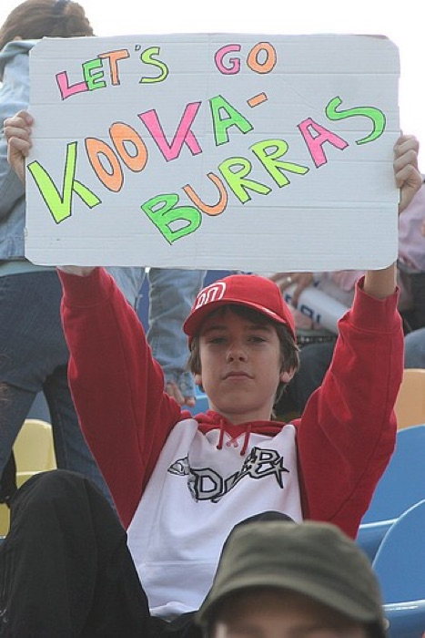
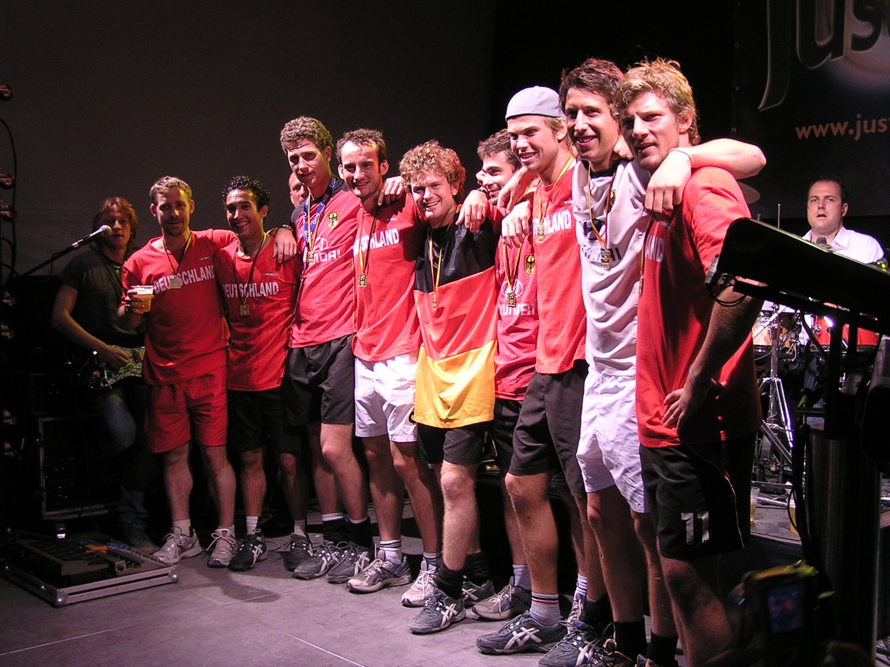
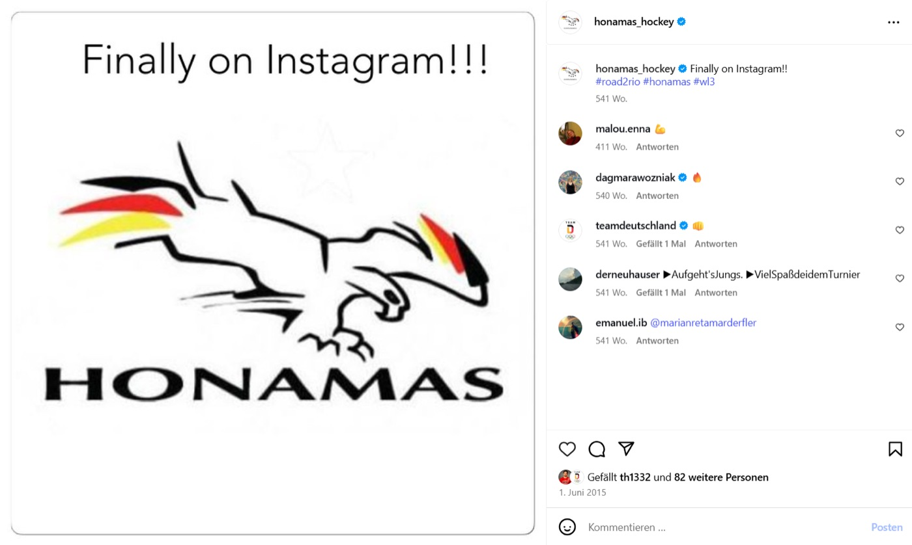
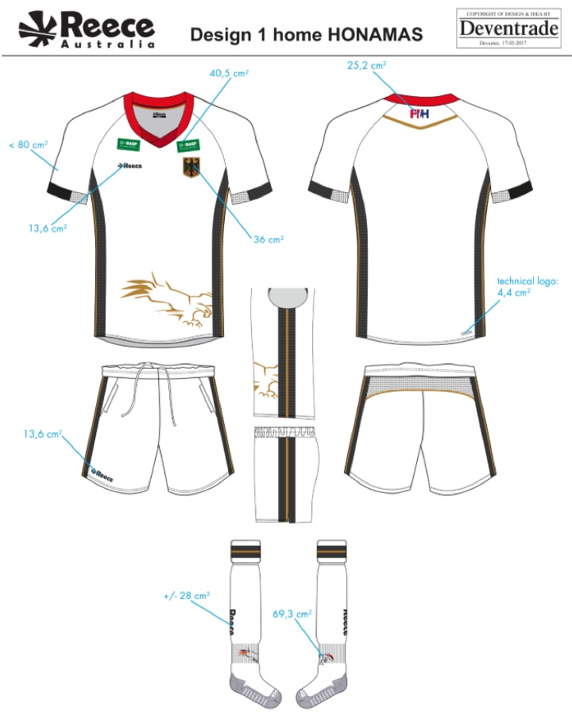
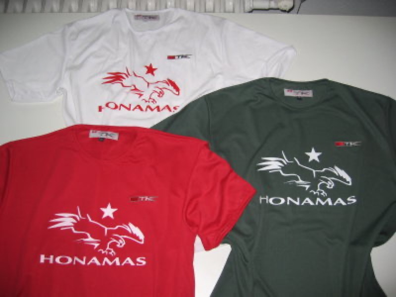
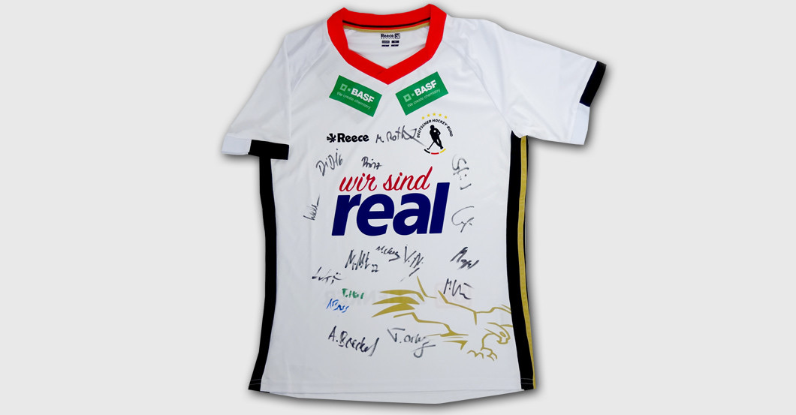
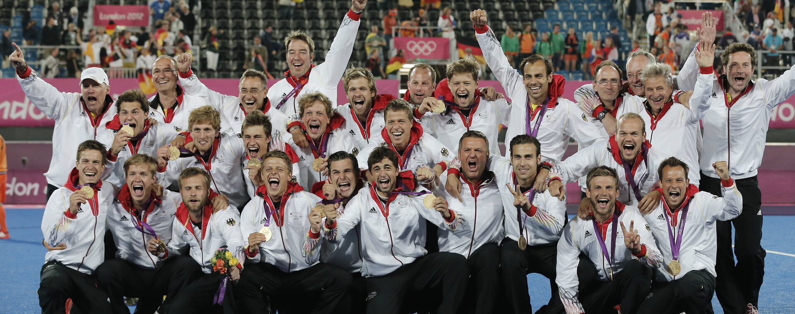

Die Idee
Auf einer Länderspielreise fällt einem Spieler auf, dass in Australien jede Nationalmannschaft einen Namen trägt. Vor der Heim-WM 2006 wird daraus im Whirlpool HONAMAS.
Kapitel lesenDer Name der deutschen Hockey-Nationalmannschaft der Herren. 2006 im Whirlpool erfunden.
Die Geschichte lesenWarum heißen die Australier Kookaburras, wir aber nur „die deutsche Herren-Nationalmannschaft“?
Auf einer Länderspielreise nach Australien fällt Björn Emmerling auf, dass dort jeder sofort weiß, wer mit den Kookaburras, Wallabies und Hockeyroos gemeint ist. Der Name allein reicht.
Vor der Heim-WM 2006 stellt er die Idee im Trainingslager in Mönchengladbach vor, in der Runde im Whirlpool des Hotels Mercure. Wenn die Fußballer die „FuBaNaMa“ sind, dann sind wir die HONAMAS.

HOckeyNAtionalMAnnschaft, kurz HONAMA. Das S macht daraus das Team.
Fünf Kapitel, von Australien bis zur Markeneintragung. Wählen Sie ein Kapitel.
Auf einer Länderspielreise fällt einem Spieler auf, dass in Australien jede Nationalmannschaft einen Namen trägt. Vor der Heim-WM 2006 wird daraus im Whirlpool HONAMAS.
Kapitel lesenLogo, Team Identity, Teamoutfit und 1.500 Shirts: Die Mannschaft macht sich selbst sichtbar, ohne Auftrag und ohne Freigabe. Am 17. September wird sie Weltmeister.
Kapitel lesen
Olympiagold und Europameistertitel, doch der Name verschwindet fast. 2015 erzählt Björn der Mannschaft in Mannheim die Geschichte neu.
Kapitel lesen
2017 erscheint das Logo erstmals offiziell auf den Trikots der Nationalmannschaft. 2023 macht das Sporthilfe-Magazin „Der Sonderweg der HONAMAS“ zum Titelthema.
Kapitel lesen
Björn meldet die Marke 2010 persönlich an, einfach weil es sonst niemand tat. 2021 übergibt er die Rechte geordnet an den DHB.
Kapitel lesenHonama, der: Raubvogel, gefräßig, angriffslustig, clever. Nur in der Gruppe erfolgreich.
Tower of Power: in der Abwehr kompromisslos und verlässlich.
S.V.A.T.: im Angriff schnell, variabel, aggressiv, torgefährlich.
Jung, kreativ, mutig, zugleich diszipliniert und zielstrebig. Die Team Identity von 2006 ist bis heute das Fundament der Marke.

Vier Tage vor Beginn der WM druckt das Team mit einem Kölner Hockeyshop 1.500 HONAMAS-Shirts. Bei der Autogrammstunde im Stadion sind sie nach wenigen Stunden ausverkauft.
„Mit unserem goldenen Logo auf der Unterhose sind wir Weltmeister geworden.“


Das Team von 2006. Jeder von ihnen hat den Namen mit Leben gefüllt.
Trainer 2006: Bernhard Peters. Alle Porträts ansehen

„Die Marke gehörte nie mir. Ich habe sie nur aufbewahrt, bis sie wieder da war, wo sie hingehört – bei der Mannschaft.“
Björn Emmerling
Eine Stunde über die Heim-WM 2006, das letzte Turnier unter Bernhard Peters, und darüber, wie auf diesem Weg die HONAMAS entstanden.
Film auf YouTube ansehen Zur Filmseite